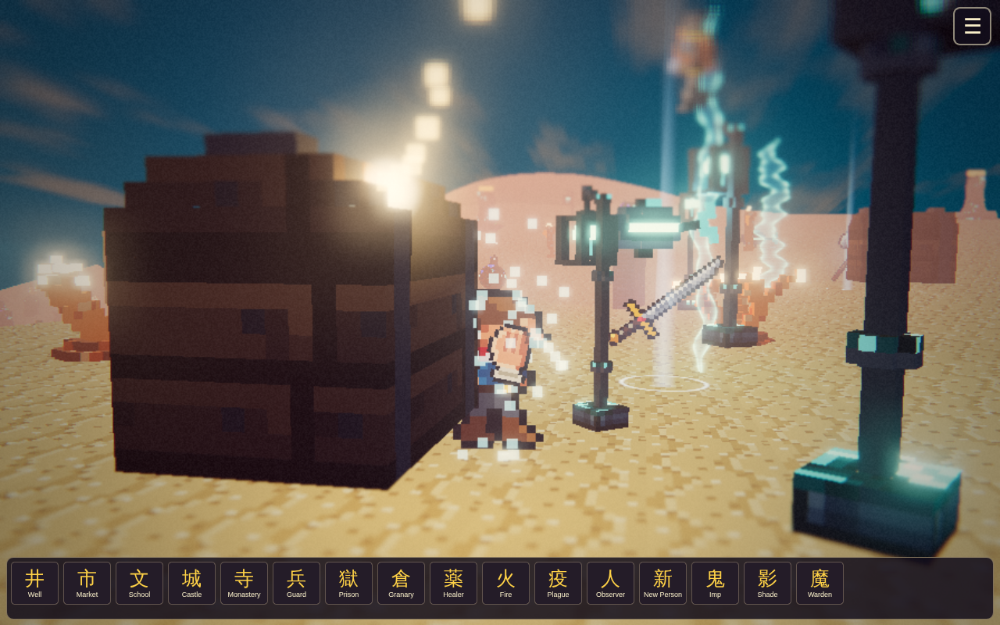

Сумерки и пепел II
Найди мистическое зерно, посади дерево жизни, поливай и защищай росток, пока мёртвый остров не оживёт.
Игра в браузере · Без рекламы · META GAMES Lab
Переходи границы трёх миров, исследуй их ландшафты и тайны.

Three Worlds объединяет тему перехода между тремя разными мирами. Вместо одной островной карты или единственного здания игрок получает пространство, где смена окружения становится ключевой частью впечатления. Каждый мир воспринимается как отдельная территория со своим ландшафтом и настроением. Главный интерес заключается в контрасте между ними: знакомый маршрут может смениться совершенно иной обстановкой, а поиски ориентиров начинаются заново. Это делает Three Worlds самостоятельной страницей в каталоге.
Во время исследования обращайте внимание на границы миров и детали, позволяющие отличать одну область от другой. Важно не только добраться до следующего участка, но и заметить, как меняется сама атмосфера при переходе. В отличие от Twilight Isles, где действие связано с цепочкой островов и маяками, Three Worlds строится на сопоставлении нескольких миров. Для тех, кто любит рассматривать игровые пространства, здесь особенно интересна общая композиция разных ландшафтов и визуальная связь между ними.
На компьютере запускайте игру по обычной браузерной ссылке и изучайте доступные кнопки прямо на игровом экране. На телефоне откройте мобильную страницу, где схема сенсорных действий зависит от используемой сцены. Начните с наблюдения за ближайшими ориентирами, чтобы после перехода было легче заметить перемены. Для первого захода не требуется знание других игр META GAMES. При желании можно познакомиться с их отдельными мирами через соседние карточки, а затем вернуться к Three Worlds и сравнить впечатления.

Найди мистическое зерно, посади дерево жизни, поливай и защищай росток, пока мёртвый остров не оживёт.

Живой остров со строительством, открытиями и загадочными обитателями.

Плыви по бесконечному архипелагу, избегай выпрыгивающего кита и зажигай маяки.
Нажми «Играть без рекламы». Игра откроется на сайте META GAMES Lab без перехода на Playgama. Управление и игровые действия доступны в самой игре.
Три разных игровых мира, между которыми строится путешествие.
Three Worlds делает акцент на переходах между разными мирами, Twilight Isles — на архипелаге и маяках.
Да, она доступна через браузерную страницу каталога.